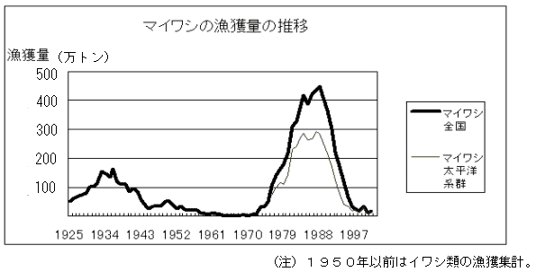
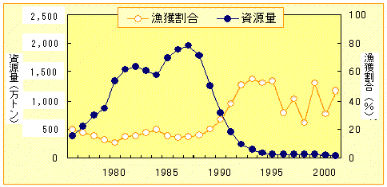

| １ マイワシ資源の動向 |
|
（１）漁獲量動向 ２０世紀における我が国のマイワシ漁獲量は、１９３０年代に約１５０万トン程度の漁獲がみられましたが、その後減少し、１９６５年には１万トンを下回りました。１９７０年代後半から漁獲の増大傾向が続き、１９８８年には漁獲のピークである４５０万トンに達し、その後、急激に漁獲が減少し、２００１年には１８万トン、２００２年には約４〜５万トン程度（推定）となっています。
 （２）マイワシ太平洋系群の資源量状況 資源量は、１９８１年に１,５００万トンを超え１９８８年まで１,４００万トンから１,９００万トンと高水準で安定していました。１９８９年から急減して１９９４年に８２万トンに減少し、１９９５年から２０００年までは５０万トン前後で低水準ながら比較的安定していましたが、２００１年は３８万トンと減少しました。２００２年の資源量は２７万トンと推定しています
 [前ページ] [次ページ] [1] [2] 3 [4] [5] [6] [7] [8] [9] [10] [11] [12] [13] [14] [15] [16] [17] |